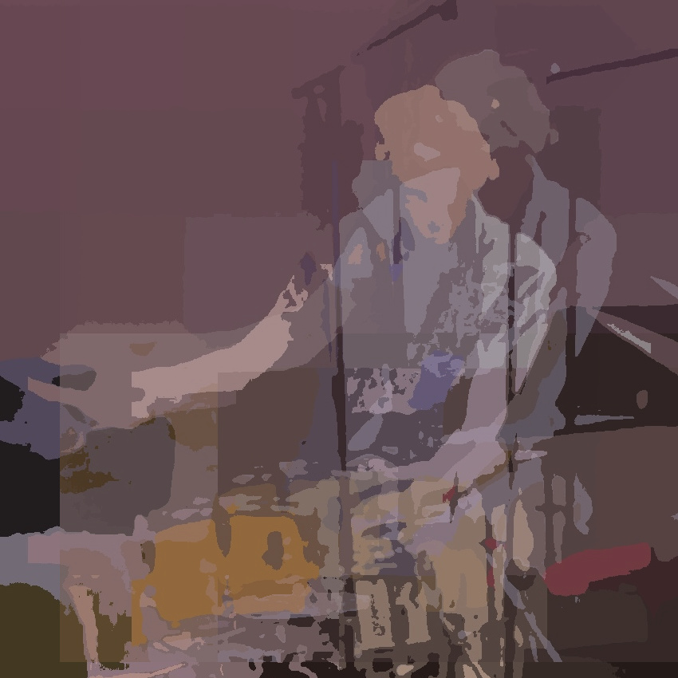
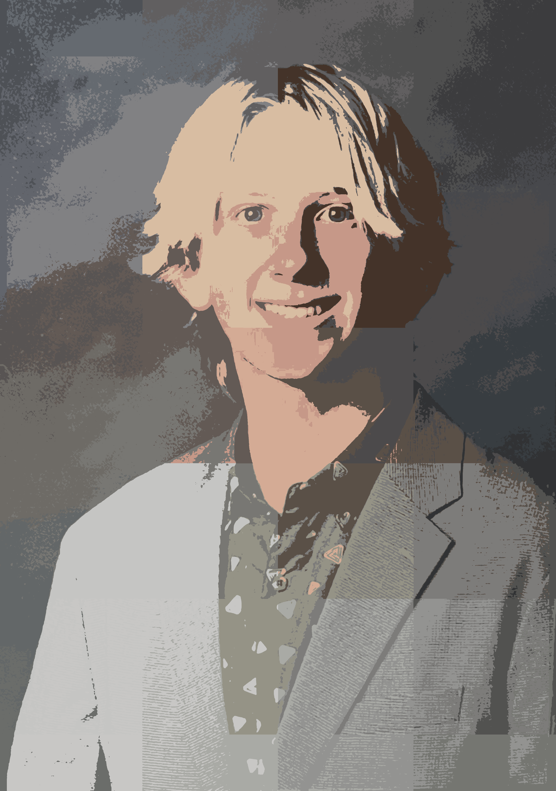
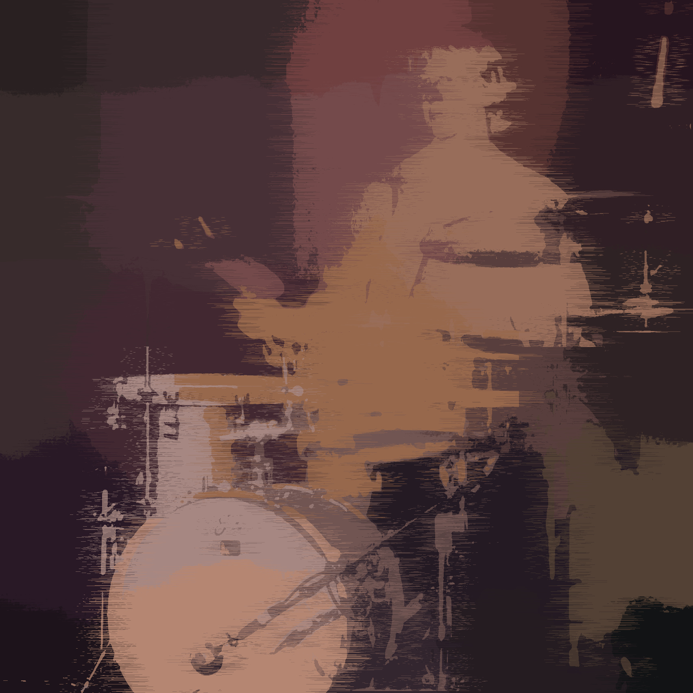

Brayson Young

About
A musician, producer, and visual designer based in Seattle,
artist Brayson Young is interested in
exploring the narrative within sound and image.
"My work is shaped by improvisation, whether I’m performing,
designing visuals, or building this portfolio from scratch
instead of relying on templates.'' he says. I’m drawn to learning new
disciplines and finding unexpected ways for them to intersect.
Beyond creating, he's equally interested in the systems behind the
work - the music industry, the creative process, and the ideas that
shape both. More on that later.
As he's originally from San Diego, Young has many artistic influences. By extracting bits and pieces of material, what starts as instinct becomes form. Each body of work carries a private identity made public.
"I’ve been involved with music for 15 years. That's nearly my whole life."
"I perform and record primarily as a drummer, but other instruments have become just as important to my creative process." said Young when asked about his relationship with music. "Learning a bit about multiple instruments has changed the way I hear music. It allows me to think beyond rhythm and consider how every part contributes to the overall story." Currently, Young is working on a full-length solo studio album that showcases not only his drumming, but also his songwriting, production, and multi-instrumental abilities. Every angle of the project - from composition and recording to mixing and visual presentation - is an opportunity to develop a more complete artistic identity. Alongside the album, he has also produced several remixes of popular songs, using familiar material as a way to experiment with new arrangements and genre shifts while developing his own musical voice.
What does the beginning of a project look like?
"There’s rarely a clear starting point. I try not to force
direction too early, and I don't have a set process.
Instead of chasing a finished idea, I spend time with what's already there.
Eventually, the pieces relate
to one another and my project reveals what it wants to become.
"
For Young, recording has become more than simply documenting ideas.
It is a space to discover new directions.
Much of his creative process begins with improvisation before
evolving into fully realized songs through
layering and experimentation.

Where do you spend most of your time creating?
"Well, I have a home studio.
My setup has expanded
and grown with me over the years, and as a result, has
helped me develop my sound."
The studio serves as both a workspace and a place of
constant learning. Beyond recording music,
Young enjoys experimenting with outboard gear and the technical side of
audio engineering. That curiosity continues to
influence not only how his music sounds, but also
how he approaches problem-solving and creativity as a whole.
Whether performing live or working behind the scenes in the studio, Young approaches each environment differently. On stage, his focus is on serving the music, responding to the musicians around him, and creating an experience that feels energetic and genuine for the audience. In the studio, his attention shifts toward detail, precision, and the overall listening experience, carefully shaping performances one layer at a time. Together, these two perspectives continue to define his musicianship, allowing him to move comfortably between performance, production, and songwriting while remaining committed to continual growth as an artist.
Visuals & The Industry
When asked about other mediums of art he enjoys,
he said, "I've been told my visual work complements the innovation I bring to music.
I approach visual work with creativity and strategy."
Beyond graphic design,
he leverages an understanding of certain aspects of an industry,
audience behaviors, and inherent human biases to create an effective
visual story. Young enjoys leaning into
his artistic side to create works like social media content, promotion for his own shows,
and even the images used in this portfolio. To learn more about his professional work in this realm, visit his work page.
"I believe this
makes the work feel
more alive and real."
Every poster, social media post, or short form video is built on a foundation: artistic vision backed by the strategy and knowledge of how to make it work.

What's the big picture?
My interest in how the music industry works has led me to explore how marketing and communications intersects with creative output, said Young. "Ultimately, I want to learn how to better share my work and connect with people who will enjoy it." His creative background informs his approach; from musical storytelling to visual branding, he always strives to combine strategy with artistic expression. Rather than seeing creativity and strategy as separate disciplines, Young views them as parts of the same process. Every project begins with an idea, but how that idea is presented, communicated, and experienced is just as important as the work itself. Whether through a live performance, a recording session, or a visual identity, he believes thoughtful presentation can deepen the connection between an artist and their audience.“My big picture goal is to keep discovering, creating, and growing as an artist. I want to share work that feels authentic, continues to evolve, and gives people something meaningful to connect with.”
Brayson is currently pursuing a dual degree in communications and jazz studies at the University of Washington while building himself in the music scene as a performer and producer. Alongside his studies, he continues to write original music as well as develop a professional marketing and brand management skill set. His long-term goal extends beyond releasing music alone - it is to build a body of work where sound, visuals, and storytelling exist together as one cohesive creative language.
Debut Album Soon
Circle of Life
A 2026 Debut Album
Recorded
San Diego, CA
Independent Release
??? / 2026
Written,
Performed,
& Produced
Brayson Young

A debut solo album is currently in development, representing months of creative exploration across original songwriting and production. While the project is largely under way, it reflects an evolving creative process shaped by improvisation and a single artistic vision. Rather than working toward a predetermined outcome, each piece is allowed to reveal itself over time through discovery and refinement. As the project progresses, more details will be shared, including music, visuals, and its official title.

So, what comes next?
If someone spends a little longer listening, looking, or
thinking than they expected to, then I’ve done my job, said Young.
What begins as just an idea evolves into a signature sound.
So far, the work shown here
is just a moment in an evolving process, whether it be through
music, photography, or anything else that comes next.
"I don’t think creativity has a finish line.
Every project changes the way I approach the next one,
whether it’s a song, an album cover, or something completely
different. As for right now, I’m focused on continuing to
learn and make work that feels honest."
“I can't see where this path leads, but it's where I'll go.”
"Not knowing" can be uncomfortable. In creative work where
there are no guarantees or clear directions to follow, it's easy
to become attached to a tangible destination or outcome.
Yet, it’s that uncertainty that
leaves room for discovery, allowing new ideas to emerge
without being confined by expectations.